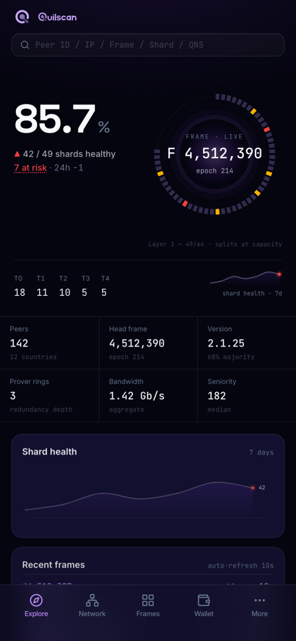
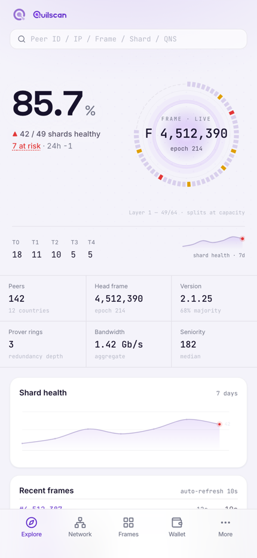
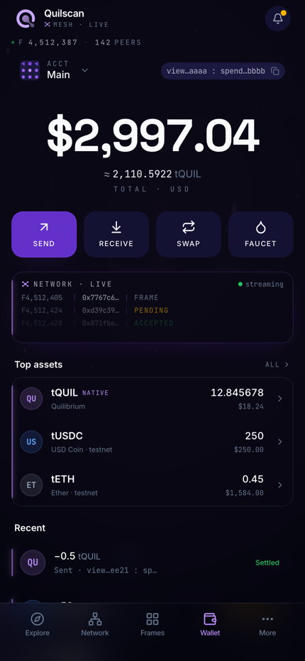

The Quilibrium observatory and wallet, in one app. Live shard coverage ring, frame heartbeat, node console, QNS and a built-in wallet — an instrument, not a decoration.


A live readout of the 64-slot shard layer — frame light-waves, breathing core, the same signature visual as quilscan. Healthy stays neutral ink; only anomalies light up.
Network, Frames, Shards, Peers, Map and QNS — full parity with the quilscan site.
Balance, transfer lifecycle, UTXO coin management and faucet. Unconfirmed never renders as success.
Manage your node through the Quilscan Agent: start/stop, logs, resource sparklines and multi-agent pairing.

Preview build · all data is simulated